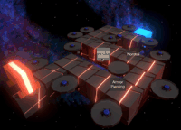
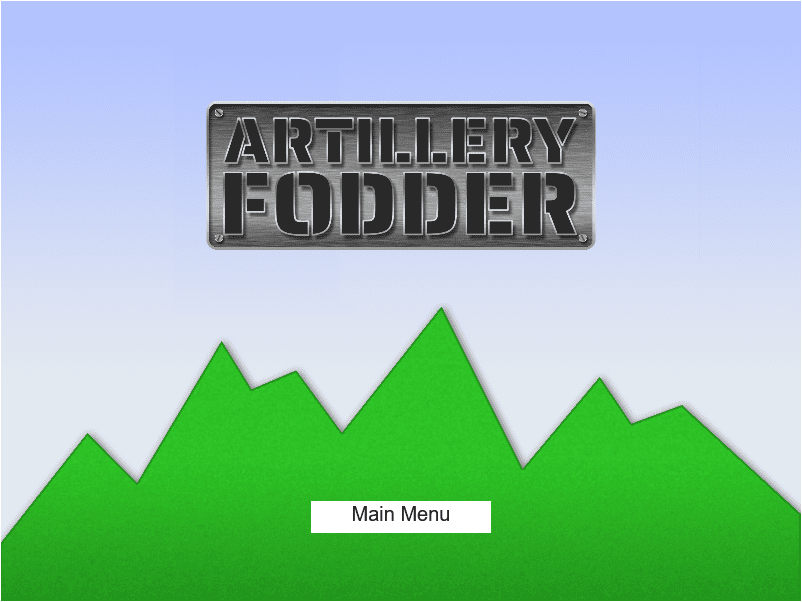
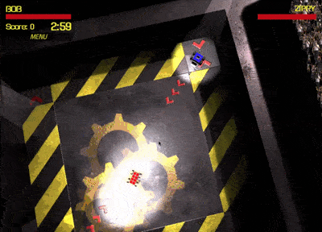

Released Sep 03, 2017
2 week jam. 2 person team.
• Designed the instrument in UE4.
• Sound design, including instrument sounds
• Planned and composed the interactive music

Towers of Space
Released Jul 9, 2017
18 week project, 13 week project
• Maintained the Wwise project used as the audio middleware
• Wrote one of the 2 metal music tracks used in the game

Released Dec 17, 2017
20 week project, 18 collaborators.
• Managed the Wwise project
• Audio middleware integration
• Involved in much of the UI integration
• All sound design

Released Feb 9, 2020
9 week project, 11 collaborators.
• Responsible for the FMOD project and integration
• Wrote the actiony synthwave track used for level 2
Released Oct 14, 2018
21 week project, 31 collaborators.
• Co-managed the FMOD project used for the audio middleware
• Sound and music for the Word Wall section of the game
Psyche

Released Dec 16, 2018
11 week project, 11 collaborators.
• Programmed the dynamic music engine. Adds and subtracts music layers depending on in game parameters.


Artillery Fodder
Released Mar 8, 2020
6 week project, 14 collaboratprs
• Project lead and main engineer
• Gameplay code
• Physics
• AI
• Audio integration
• Terrain generation
• Most UI and weapons code

Released Apr 5, 2020
13 weeks project, 15 collaborators
• Programmed the audio engine using the WebAudioAPI. Features including 2D positional audio and synced music track crossfading
• All of the sound integration

Released Aug 5, 2018
15 week project, 24 collaborators.
• Programmed the HTML5 audio engine. Features include dynamically mixed audio loops, a robust music manager, and multiple audio group volumes
• Music integration
• Most of the sound integration
• Some UI design and relevant integration for the option menus
• Ambience and UI sound design
• Wrote a "Harvest Moon/Stardew Valley" style music track

Released Jul 29, 2018
11 weeks, 23 collaborators
• Wrote the HTML5 audio engine. Includes layer blended sound mixing based on in game parameters
• Designed and integrated the dynamic car sounds. Features include RPM accurate engine sounds and speed based brake sounds.

Released Sept 30, 2018
17 week project, 13 collaborators
• Wrote and integrated the audio engine.
The project lead requested I come integrate the audio engine I had designed and already integrated into Ghosts of Neo Tokyo and Dream Racer.

Released Apr 22, 2018
10 week project, 18 collaborators.
• Audio lead
• Wrote the HTML5 audio engine, features included synced music crossfades
• All music and sound integration

Released Dec 9, 2018
15 week project, 32 collaborators
• Uses the saem JS audio engine I wrote for Ghosts in Neo Tokyo, Dream Racer, and We Must Prepare

Released Jan 12, 2020
13 week project, 14 collaborators
• UI debugging and fixes for sliders and the pause menu
• Wrote the action orchestra piece used during the deck management section

Released May 21, 2017
20 week project, 13 collaborators
• Composed a sci-fi western track for the gameplay music
Released Feb 11 2018
10 week project, 9 collaborators
• Composed an upbeat 8-bit/16-bit style racing music track
Released Feb 4, 2018
9 week project, 9 collaborators
• Composed music for the boss fight

Scrap Metal Elites
Released May 27, 2018
16 week project, 13 collaborators
• Designed all of the metal impact sounds
• A member of the stadium crowd
Released May 6, 2018
6 week project, 8 collaborators
• Sound design for the ball
When the game was nearing release I joined with this last hour contribution that was important for player feedback.